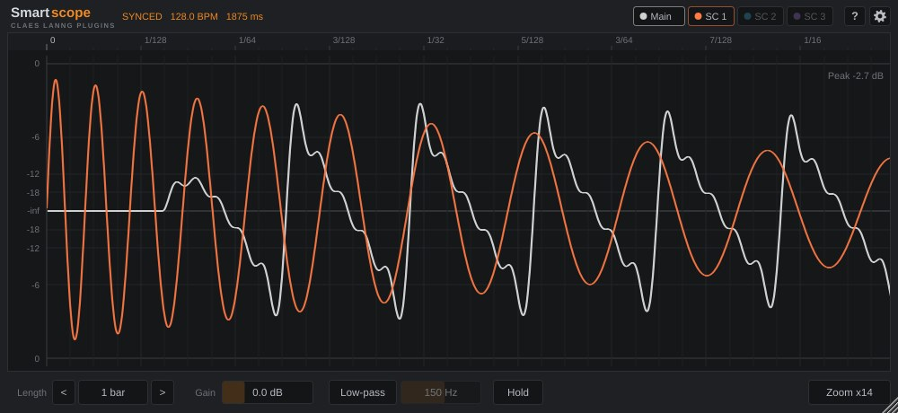
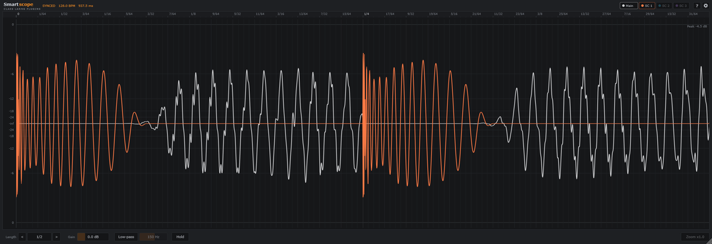
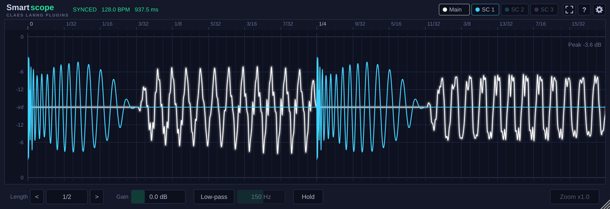

Smartscope
See whether your kick and bass are in phase, locked to the tempo of your track.
Version 1.1. Free. VST3 for Windows 10 and 11 (64-bit), made for FL Studio.

What it does
An oscilloscope that follows your project's tempo and song position, so the picture stands still while your loop plays.
- Tempo sync
- The window always starts on the beat. Pick a length from 1/16 to 4 bars.
- Sidechain layers
- Send up to three other tracks into Smartscope and see each as its own coloured layer.
- See the polarity
- A linear scale shows which way each wave swings, so kick and bass fighting each other is easy to spot.
- Zoom to single samples
- Scroll in until you see every sample. The grid switches to milliseconds, and hovering shows the exact time and level.
- Low-pass for the display
- Hide everything but the low end. It never changes your audio, and it still works while playback is stopped.
- Hold and compare
- Keep a snapshot as a reference, nudge the bass, and see what changed.
Zoom in on the hit
Here the bass starts about 18 ms after the kick. Drag a sample by that much, and the two line up.

Show the kick on the bass track
How to set up a sidechain layer in FL Studio.
- Put Smartscope on the mixer track you want to look at, for example the bass.
- Select the kick's mixer track. Right-click the small arrow under Smartscope's track and choose Sidechain to this track.
- In Smartscope's window, click FL's gear icon, open Processing, and set Sidechain 1 to the kick's track number.
- The SC 1 button in Smartscope lights up and the kick appears. Repeat for sidechains 2 and 3.
Your colours
Four themes, and a colour and opacity for every layer. Your choices are saved with the project.




Install
Needs Windows 10 or 11 (64-bit) and a DAW that loads VST3 plugins, such as FL Studio. Takes about a minute.
- Download
Smartscope-v1.1.0-Windows-VST3.zipand unzip it. - Copy the
Smartscope.vst3folder intoC:\Program Files\Common Files\VST3. - In FL Studio, open Options, then Manage plugins, and click Find more plugins. Add Smartscope to a mixer track.